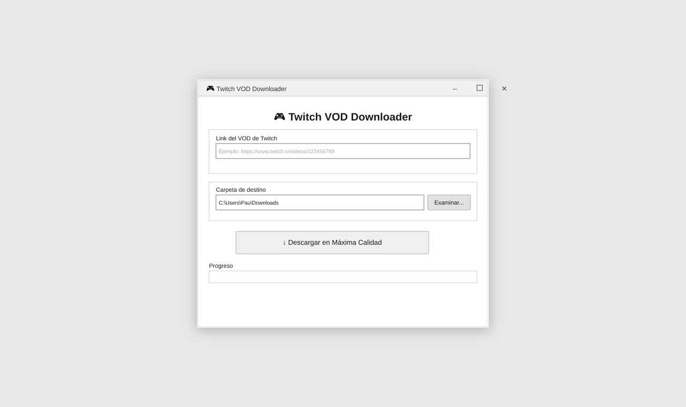

Descargar stream de Twitch por link
Pega la URL del VOD o clip y descarga en segundos. Incluye soporte para directos pasados y clips de Twitch.
Twitch VOD Downloader es una app de escritorio para bajar videos de Twitch completos, clips y streams pasados desde un link. Pensada para creadores, editores y usuarios que quieren guardar contenido para uso personal y trabajo offline.
Windows .exe | Gratis | Release estable
Interfaz clara con campo de enlace, carpeta de destino, boton de descarga y progreso en tiempo real para que sepas exactamente cuanto falta.

Pega la URL del VOD o clip y descarga en segundos. Incluye soporte para directos pasados y clips de Twitch.
Obtiene la mejor calidad disponible para que puedas editar highlights o conservar contenido con buena compatibilidad.
Interfaz simple, rápida y sin configuración compleja, enfocada en descargar directos de Twitch gratis en PC.
Si buscabas una forma simple de descargar directos de Twitch, esta herramienta te permite bajar videos de Twitch completos y clips desde un enlace. Funciona como Twitch VOD downloader y tambien como Twitch clip downloader para quienes quieren guardar contenido en local.
Muchos usuarios la usan para descargar directos pasados de Twitch por link, convertir directos de Twitch a MP4 y exportar material a PC para edicion. Es una opcion practica para descargar directos para editar, preparar highlights offline y trabajar con videos en alta calidad.
En resumen, es una alternativa moderna para quien compara herramientas tipo Twitch leecher alternativo y necesita una app estable para 2026, con enfoque en facilidad de uso y descarga gratuita en Windows.
Flujo recomendado: abre la app, pega el enlace del stream o clip, selecciona carpeta y descarga. No necesitas configuraciones avanzadas ni pasos complejos para obtener el archivo local listo para editar o archivar.
Casos de uso habituales: guardar emisiones antes de que desaparezcan, preparar material para edicion en Premiere o DaVinci, extraer segmentos para reels y conservar tus videos favoritos para consulta offline.
Si vienes de buscar "como descargar un directo de Twitch de otra persona", esta pagina resume el proceso de forma clara y centrada en uso personal responsable.
Algunos VODs no estan disponibles por configuracion del canal, restricciones de region, borrado del contenido o derechos de terceros.
Depende del tamaño del video y de tu velocidad de internet. En la app puedes ver el progreso en tiempo real para estimar la finalizacion.
Si. Es util para descargar directos para editar, crear compilaciones y trabajar material offline en tu PC.